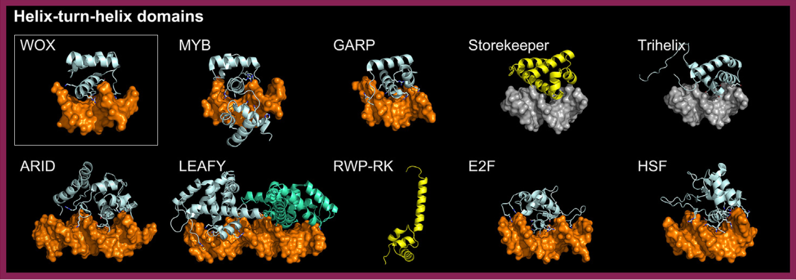

Transcription factors (TFs) in the HTH (helix-turn-helix) superclass bind to specific DNA sequences
by inserting a recognition alpha-helix into the major groove of DNA. This helix is followed by a turn and,
in most cases, two additional alpha-helices packed nearly perpendicularly to it. HTH DNA-binding domains (DBDs)
often include an extra structural element, such as a loop, which projects basic residues into the DNA minor groove,
contributing to sequence specificity
[src]
[src].
In plants, the HTH superclass is divided into seven classes, five of which are present: Heat Shock Factors (HSF),
Fork Head/Winged Helix Factors, AT-Rich Interaction Domain (ARID), Homeodomain Factors (HD), and Tryptophan Cluster Factors.
The first three classes are represented by single families in plants: HSF, E2F, and ARID, respectively.
The remaining classes, such as Homeodomain and Tryptophan Cluster Factors, show significant diversity and expansion,
often due to plant-specific domain combinations or gene duplications.

Homeodomain (HD) factors contain a 60-amino-acid homeobox domain that folds into three alpha-helices. In plants, HD factors exhibit significant diversity due to adjacent domains, such as the leucine zipper in HD-Zip proteins, which facilitate dimerization and influence DNA binding. The 3D structures of plant HD DBDs, such as WUSCHEL (WOX family, PDB: 6RYI), reveal a canonical HD fold with expanded loop regions compared to the Drosophila melanogaster Engrailed HD protein[src] [src].